← Back to Archive
数字游民分享 | 江江：人生是一场又一场的田野
作者: SeeDAO
发布时间: 2023-07-12 12:52:02
分类:
SeeDAO, Web3, DAO, 数字游民, 数字游民分享会
我之前在上海的一家公司做趋势研究员，如果是在项目里，这个岗位其实不太好做数字游民，但因为公司的文化比较开放，我也不是 base 在项目的状态，所以把岗位谈成了远程。
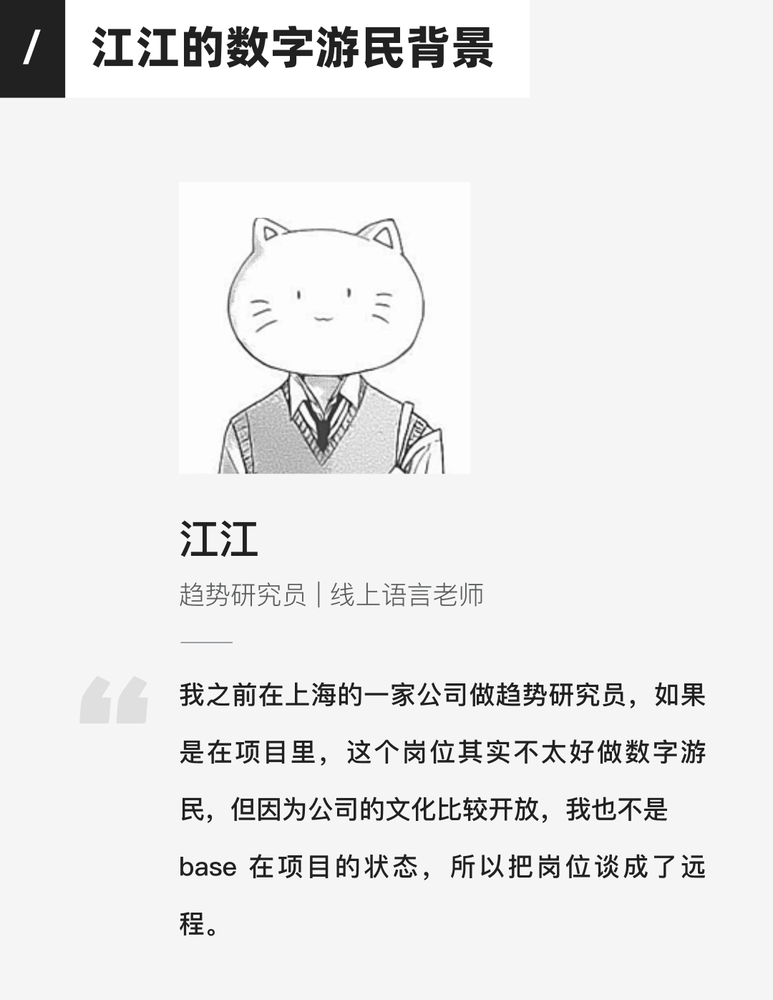
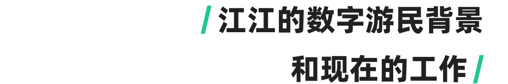
我之前在上海的一家公司做趋势研究员，如果是在项目里，这个岗位其实不太好做数字游民，但因为公司的文化比较开放，我也不是 base 在项目的状态，所以把岗位谈成了远程。 同样的方法，我的朋友做建筑方面的研究，她很想去大理旅居，所以就跟他的老板商量，最后也变成了远程。 所以我觉得如果大家想做数字游民，可能你觉得不太能远程，但是试一试也无妨，对吧？说不定就成了，这也是一个思路。 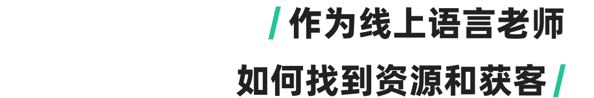
我从大学开始就有陆续跟一些机构合作，知道很多联系方式，也会投简历什么的，跟大家一样。等到了一个比较成熟的阶段，他们有学生就会来找你，这是第一步。那之后就会变成学生觉得你教得很好，但只要你教的比较好，收费也比较合理，就会有一个持续的合作，积累口碑。如果之后能转成自己开一个工作室的话，应该可以维持线上的收入。 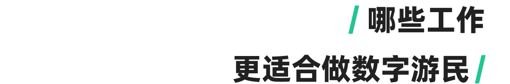
有一些工作确实是比较容易做数字游民，例如程序员，设计师、翻译作家、线上撰稿、电子营销，自媒体，这类感觉出现的频次特别高。有些工作可能它的在地性比较强，所以很难利用网络去脱离线下情况去做数字游民。 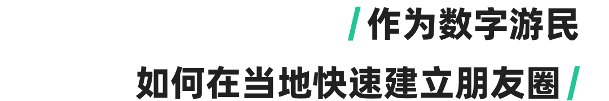
当时我完全不认识大理的任何一个人。我先入住了身心灵的一个社区叫醒院，那个主理人有点瑜伽老师的性质，大家会 6 点钟在天台做瑜伽。那个院子我待了几天，但当时一起的朋友对住宿条件不太满意，就搬到了706大理的分部。我在 706 的线上认识蛮多朋友，到了线下的社区里面，虽然不认识人，但是社区的氛围非常好，所以就飞快地认识了很多在大理的朋友。我们会一起约饭出去玩什么的，但是我工作比较忙，所以也只有下午会出去玩一下，晚上回来继续干活。 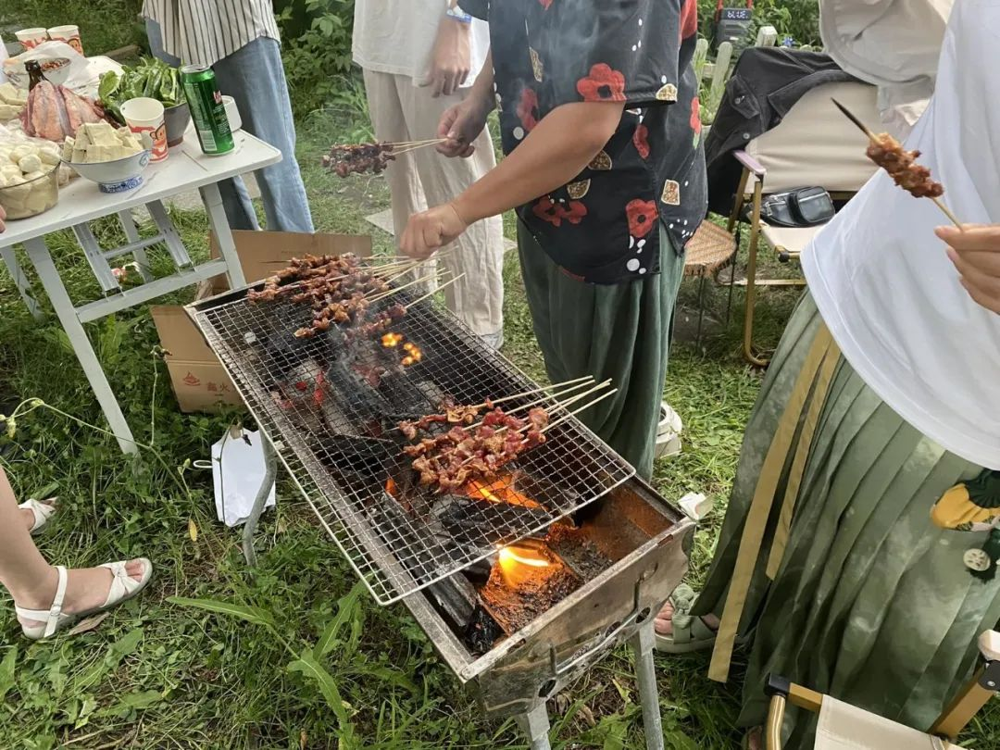@江江： 院子里烧烤哈哈哈（也有SeeDAO的小伙伴）
除此之外，也可以在当地的一些活动上认识人。比如我对教育感兴趣，就去参加了一些跨学科的工作坊，认识了很多创新教育领域的朋友，后来去了一些素食的聚会和艺术疗愈探索这种活动，认识了一些摆摊的艺术家，或是做疗愈师心理咨询的朋友。 总结一下就是，在当地的话就要跟当地社群发生联系 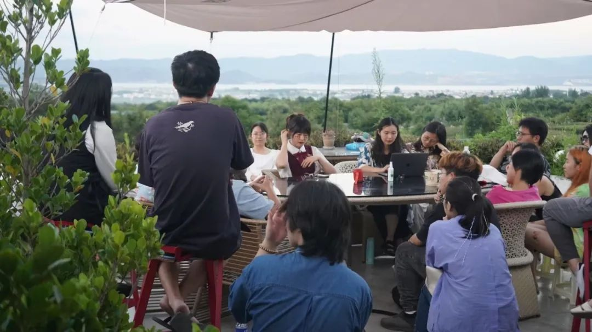@江江： 我举办的活动
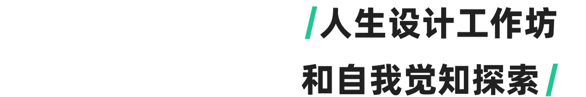
有些人可能是被迫成为数字游民，不是自己主动去选择的，但对我来说是很有觉知去选择的一个过程，更重要的是设计成为数字游民的过程。 当时我2020年回到国内特别的抑郁，相当于什么都没有做躺了半年，因为躺着也没事干，就看了一本书《斯坦福大学人生设计课》，印象很深刻，但我也什么都没有做。直到 2021 年 1 月份，朋友突然联系到我说：诶，你有没有兴趣做一个工作坊？我说好，然后我们就开始了一场长达四个月的人生设计工作坊。在工作坊中我们互相帮助对方去成长探索，评估我们的identity，我们是谁，我们现在处在哪里，我们从哪里来，我们将要往哪里去，就是去探索这些问题。根据书中一整套的思路，每一个章节都有练习。我们一共做了 13 次，每次长达三个小时。 简单的说，它会有一个仪表盘，去监测你现在的整个状态，比如你对爱的状态是怎么样，你的关系，你的健康，你的工作，你的生活；还会有一个人生指南针，它会看到你真正的工作观和人生观是怎么样的，这是第二步；第三步是去观察和寻找你在什么事情上投入最多，是否产生了心流，能量水平是怎么样的；第四步是去发挥想象力做一个思维导图，设计三个航线，这三个航线在书中被称为奥德赛计划。整本书象征着人生是一条漫长而充满风险的旅程，你要有希望、有目标、有帮手、也有爱人、也有敌人，也有未知的风险和运气并存。 我们同时设计了三个奥德赛计划，设计未来的五年是什么样的，相当于三个平行世界的人生。第一个是你正在做的事情的延续；第二个是如果有一天你无法从事正在做的事情的时候，想要去做的事；第三个更像是一种最大限度的想象，如果不考虑金钱和其他，你最想过的生活是什么样的。我们互相分享了自己三个平行世界的人生是什么样，最好玩的地方是什么，并对三个平行世界的人生提出 3 个问题，这3个问题就好像是你要在海上行驶去往未知的旅途，在旅途中会遇到的阻碍。 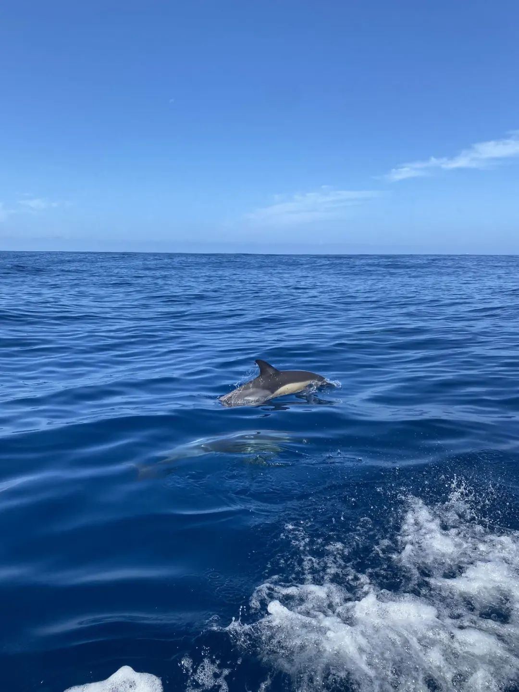@江江： 在大西洋看海豚
我当时完全喜欢上这本书，它对我的人生产生了很大的影响。现在的世界是不确定的，你没有办法找到一条唯一确定的轨道去知道你未来的职业要做什么，你完全无法想象可能你做一个什么工种，那个工种就被 AI 取代了。基于这个，我在想未来的工作和生活不应该是被规划出来的，而应该是被设计出来的，应该是建立在这种强大的不确定世界之上对于新的可能性的想象 我当时做了能量水平的一个回顾，发现我有一年在欧洲做交换生的时候，住在一个葡萄牙当地人的家里，那个阿姨 50多岁，单身未婚，开Airbnb跟世界的人一起住，我在那里住了一年，我真的太喜欢她了，那段时间是我人生活到现在最幸福的时刻。然后我就明白我其实是想这样，想去写她的故事，想在世界不同的地方进行创作和在地的探索，这是深植于我内心和生命的一种冲动和力量。我之前陷入抑郁的时候，整个人都不想活了，所以我就在想，当我们的人生已经没有了一种向上的可能性，当我这一生活到 80 岁还有 2500 个星期好活，那我到底要做什么？这个之后我就找到了一种答案，或者不是答案，而是一种可能性，我可以为了这种创作和探索而活下来的勇气。我说好，接下来我要做一场人生实验，我要看看这个流动和在地的探索是不是我所需要的。 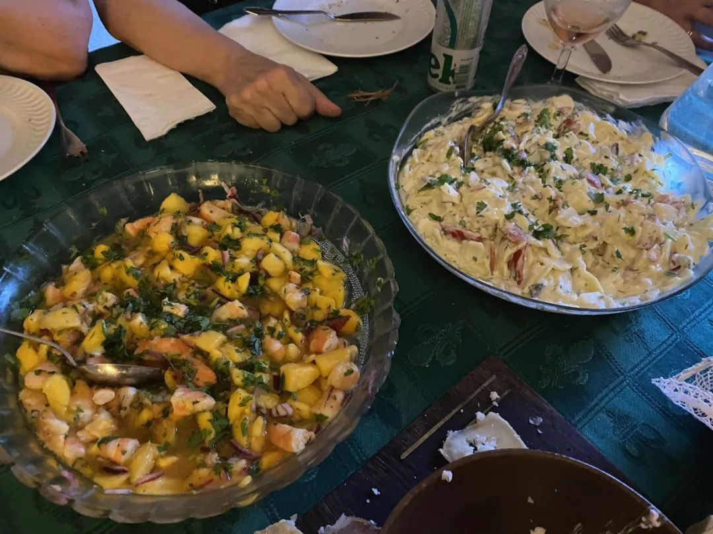@江江： 在里斯本参加葡萄牙人的家庭聚会
那这个时候数字游民可能是一个触点，如果我成为数字游民，我的人生就不是一场死水，我不用去走那条唯一确定的道路，也不用遵循社会给我们的规训和规范，而是去创造，去爱，在各地的旅途中去探索，和在地的人进行连接 基于我在奥德赛计划中的特性，下一步就是去设计原型。原型设计就是你要不去采访一些做数字游民的人，知道他们的生活是怎么样的，要不就是直接过去。当时的契机是我所有的工作都变成了远程，那我觉得上天都已经暗示宇宙都给我信号到这种地步了，我还不去吗？所以我就直接买了一张机票去大理。 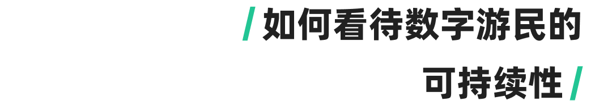
在大理待了 5 个月，其实有过很多的挣扎。数字游民是一个流动的状态，会没有很深入的连接，对我来说是这样，可能很多人你刚认识他就走了，最后剩下你一个，每次认识一个新的人都要去重新介绍自己，那种连接感其实是没有你长时间在一个地方那么深的，是一个让我很不舒服的问题。同时我觉得在恋爱亲密关系上也会有不太安全的感觉，没有很强的支持感，可能你换一个地方，但那个人不想跟你去或更频繁地流动，你就没有办法再继续这个亲密关系了。 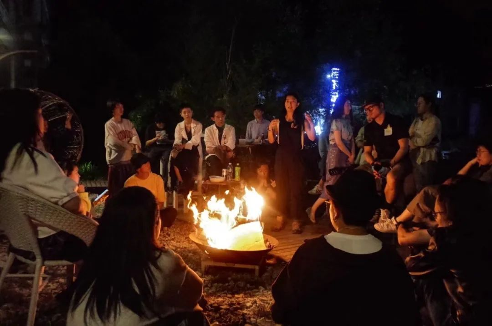@江江： 大理自然音乐篝火晚会
所以我当时就去了一些比较熟悉的地方，两边都充分感受了一下我到底对于数字游民这个事情是怎么看待的。可能一种更加持续的方式更适合我，因为我要做在地的探索还有创作，就不能流得太快。我自己目前的计划中，理想的状态是一到两年才会换一个地方，或一年换一个地方，然后再以那个地方为中心去做探索。比如我住在大理，然后我去喜洲，去洱海周边探索一下白族文化之类的，可能对我来说是一个比较好的频率，这也是我目前希望在里斯本多待一会儿做的事情。 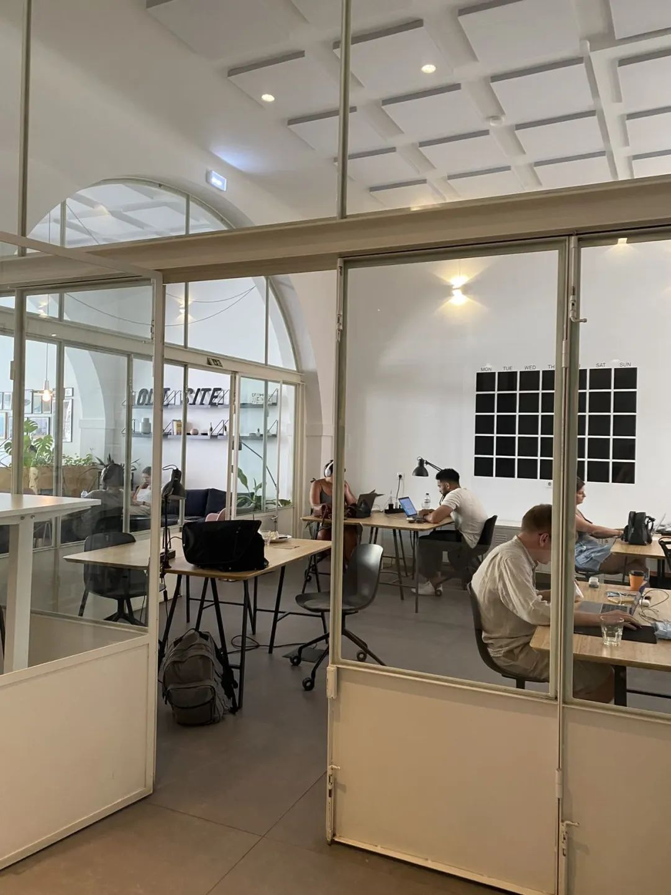@江江： 在里斯本的数字游民co-work空间办公
工作的话也有一些思考。我之前研究员工作在地性没有那么强，但是必须在国内，所以出了国之后可能很多事情都做不了，就必须重新再找一些我能在这儿做的事情。我做了一番调研，如果我想继续做数字游民，可能还是需要有一个非常强的技能可以支持我，所以有在考虑说转型的问题，更好地实现一种可持续的状态。 我有一个点很想分享给大家，之前听播客听到，人的想要有三种：第一种想要是你不动，他来了就随缘；第二种想要是你知道你想要的话，就不能去做某些事情；还有一种想要是你要付出一些代价。我觉得什么事情都不可能是既要又要的 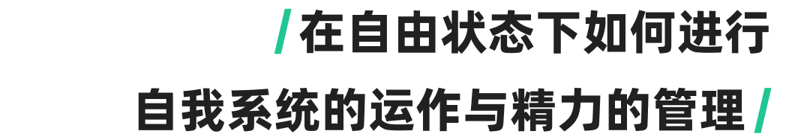
我之前写了很多年的日记，但都是纯粹流水账和疗愈功能的日记，后来就觉得说不定可以把趋势研究的方法论跟我的人生设计结合起来做一个体系，去指导和记录我的生活，观察和觉知我的状态。萌生了想法之后我就开始不断的去做系统的搭建，目前迭代有一个basic层面的东西，有三层。 最底层是记录你的时间分配。 人生是有限度的，有本书叫《四千周》，就是一个人的一生只有4000个星期的生命，假设你活 80 岁，会觉得一年很长，但说星期的话，会觉得一星期很快就过去了。我现在快 30 了，差不多还剩下 2500 个星期，那在这个时间的有限性下我就要做出选择。相当于你在什么事情、什么主题和什么领域上进行持续的时间投入和刻意练习，还有记录你的感悟，你在工作生活学习和日常中不断涌现激发的灵感，这些全部加起来是你的基础数据层。 第二层相当于你通过第一层这些信息数据得出对于自己的变化洞察 ，比如你把想法和灵感用在哪些时间分配上，你对你自己的哪些地方你产生了心流的感觉，哪些地方能量投入多，哪些地方投入少，哪些事情你擅长，哪些事情不擅长，哪些事情你做成功了，哪些事情失败了，还有你的一些困惑、焦虑，把它全部都归类，然后分在不同的盒子里。每个月看一次，就可以发现一些洞察。这些洞察是什么呢？你可能会发现原来我是一个跟很喜欢跟人打交道的人，或者原来我是一个喜欢跟数字打交道的人，或者是原来我跟一群人在一起的时候，我会有点害怕，或者说，我原来特别喜欢做一件什么事情。比如我喜欢教书，是因为我对教育感兴趣，但这个太宽泛了，你要找那些细节的东西，对我来说我特别享受教学中用很简单的语言给学生把难的东西讲出来的那个过程，你要挖到这种颗粒度，就会对自己有一些洞察。 第三层是你通过这些数据分析出来的价值观 ，这些价值观才是你的人生 DNA 的底色，就是你的出厂设置，你的出厂设置，加上你被环境的影响和家庭对你的影响，形成了你的价值观。价值观、人生观、工作观这些东西是第三层，这些东西才是你在航海时指引你方向的东西，你任何时候的困惑，都可以打开第三层的东西去看一看，它是你所有基础数据日常实践中提取出来的，结合了感性和理性的层面对自己最大的认知。 这三层都是我研究生学的趋势研究和工作时候的那套方法论，我觉得它特别好用，不仅在工作中好用，在我的生活中也特别好用。这个体系我还在不断的迭代，现在已经迭代到第六版了，可能又有一些变化，但我给大家讲的是一个已经不太变的东西，这个可能能指导你之后生活和工作的变化。 当时做人生设计工作坊的时候，我的同伴讲了一个故事，里面有句话很鼓励到我：你每天醒来或者睡觉前，其实心里都非常的有觉知，你知道你现在身处什么位置，遇到了什么阻碍，但是你会找到办法，你可能不知道是什么办法，但你知道大概会往那个方向去航海，你会前行，虽然前方的世界是一片迷雾。你不确定未来在哪里，但这份觉知和你对大方向的判断会引导你走向一个更多可能性和更属于你向往的那个地方。 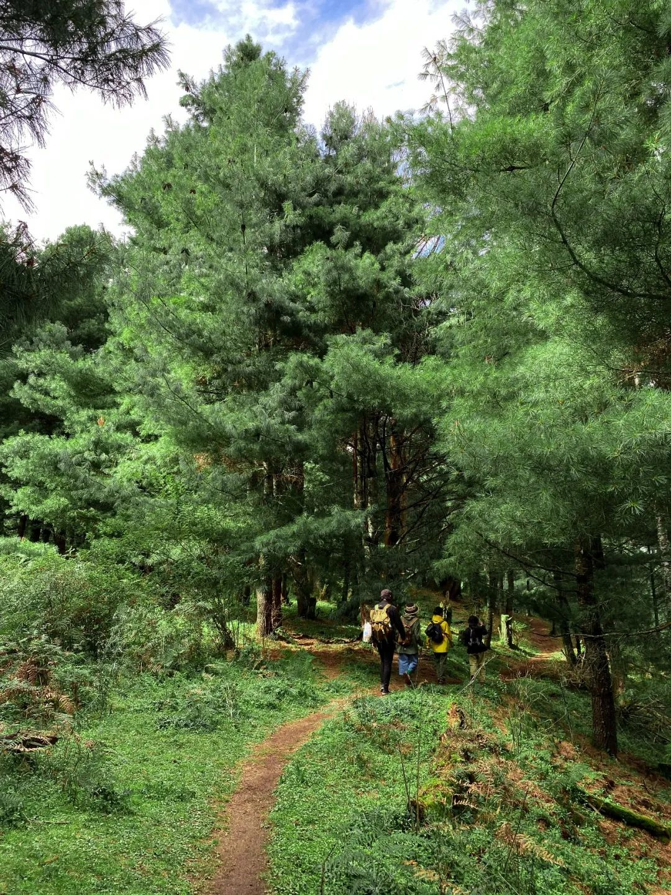@江江： 大理徒步
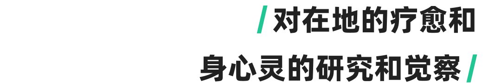
我在这一块的研究还比较弱，确实想再深入了解一下。自己观察在大理还是挺多数字游民，其中有很大一部分也是 Web3 的人，会去做禅修，或者松钵，参加工作坊，净化一下心灵之类的。之前不是在黑山大家也有这种，和身心灵疗愈的活动结合在一起我觉得应该是很强的一个趋势，未来自己的研究观察会是这个方向。 —
内容来源 | T1NG
设计排版 | T1NG
审核 | Ines